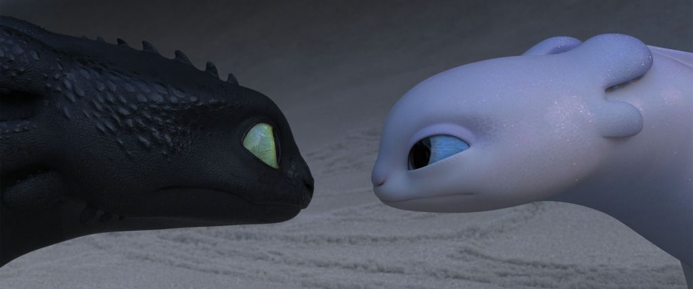

Furies
The Night Fury is the rarest dragon of all. There is no other like it left in the world of dragons. However, the Light Fury might be even rarer. It is the female version of the Night Fury.
Night Fury vs Light Fury
What makes a Fury so special?
- They are strong
- They are fast
- They are compassionate
- They are beautiful
- They are smart
The Furies' friends
The light and night Fury have many friends. Some are stronger, some are smarter, some are more compassionate. But none of them has the same characteristics all at once, which makes them less special than the Furies. They are great friends, however.
Find out more by clicking on the links below.